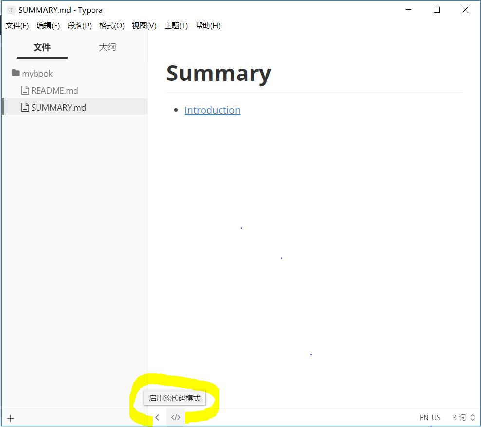

第三节 安装Typora
一、妙啊
Typora 是一款支持实时预览的 Markdown 文本编辑器。它有 OS X、Windows、Linux 三个平台的版本，并且由于仍在测试中，是完全免费的。
功能强大、设计冷静、体验美妙、理念先进
> 妙不可言，当你熟悉她，你会爱上她。
让 Markdown 写作更简单，免费极简编辑器：Typora
二、安装Typora
1、下载安装
直接下载安装，打开软件 ===>>> 文件===>>>打开文件夹将之前3.1中新建的mybook打开。里面已经有两个文件。markdown格式，开始编辑。

2、新建目录
第一步：在下面切换源码编辑如图：修改SUMMARY.md

第二步：修改目录内容：Typora 是所见即所得（实时渲染）的 Markdown 编辑器。会显示网页样式。
一定要记得保存
Ctrl+S！
# 目录
* [前言](README.md)
* [第一章](Chapter1/README.md)
* [第1节：衣](Chapter1/衣.md)
* [第2节：食](Chapter1/食.md)
* [第3节：住](Chapter1/住.md)
* [第4节：行](Chapter1/行.md)
* [第二章](Chapter2/README.md)
* [第三章](Chapter3/README.md)
* [第四章](Chapter4/README.md)
———
很多时候我们并不需要一次性写完目录，随写随增。
但是目录结构要清晰。
第三步：回到命令行在mybook文件路径下gitbook init命令。GitBook会查找SUMMARY.md文件中描述的目录和文件，如果没有则创建。
E:\06GitBook\mybook>gitbook init
info: create Chapter1/README.md
info: create Chapter1/衣.md
info: create Chapter1/食.md
info: create Chapter1/住.md
info: create Chapter1/行.md
info: create Chapter2/README.md
info: create Chapter3/README.md
info: create Chapter4/README.md
info: create SUMMARY.md
info: initialization is finished
3、预览效果
第四步：执行gitbook serve来预览这本书籍。执行命令后会对 Markdown 格式的文档进行转换，默认转换为 html 格式，最后提示 “Serving book on http://localhost:4000”。
第五步：打开 http://localhost:4000浏览这本书。
至此关于电子书的制作基本完成了。下面是对书进行输出
serve命令可以指定端口：
gitbook serve --port 2333
4、输出书籍
第一种：静态网站
gitbook build [书籍路径] [输出路径]
默认将生成的静态网站输出到 _book 目录HTML文件。
第二种：生成PDF格式
gitbook pdf ./ ./mybook.pdf
第三种：生成epub格式
gitbook epub ./ ./mybook.epub
第四种：生成mobi格式
gitbook mobi ./ ./mybook.mobi
第五种：用Git做版本管理
git init
git remote add...
git add
git commit -m
git push